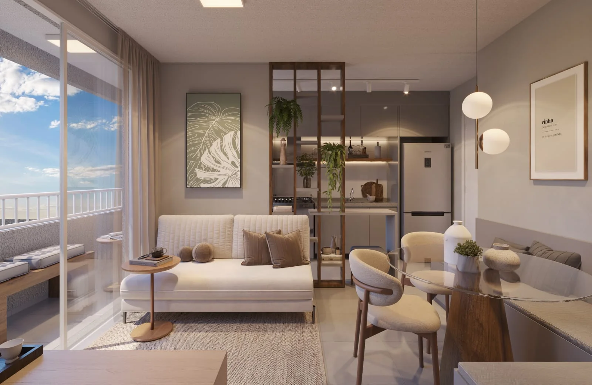
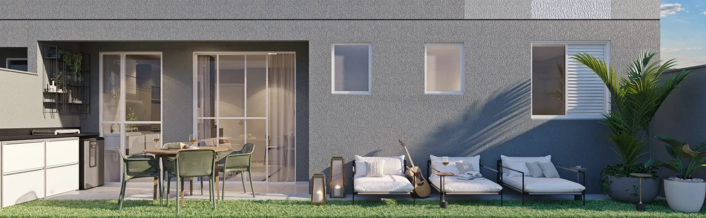
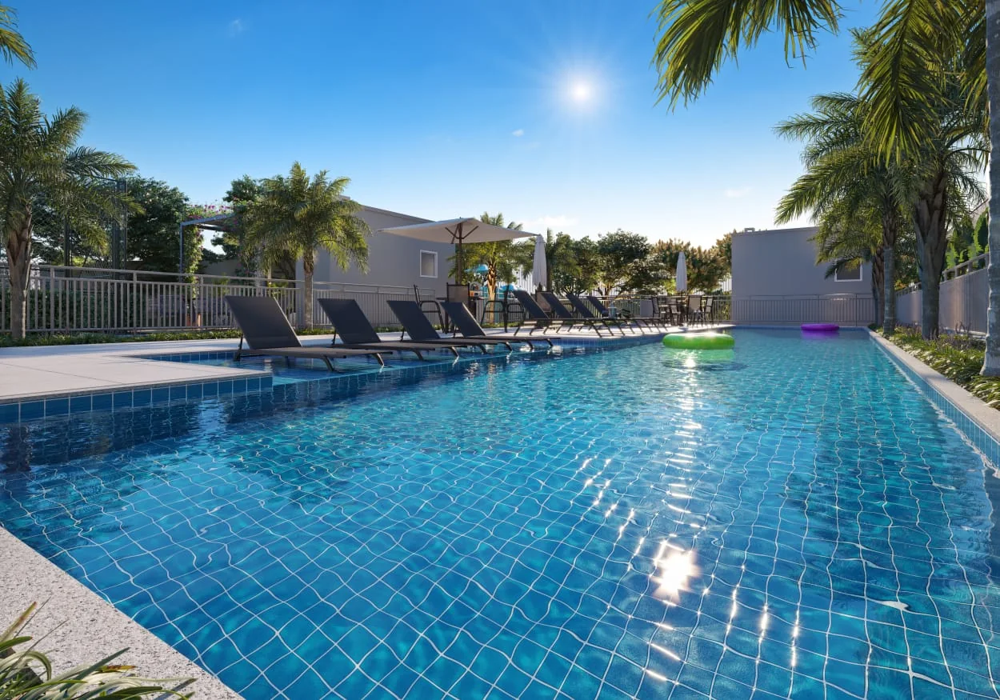
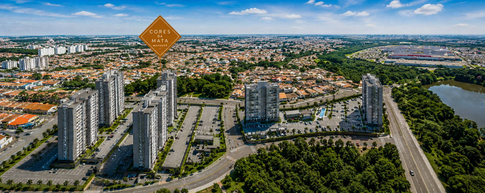

COMPLEXO MANGARÁ • CAMPINAS
Cores da Mata
Mangará.
2 dormitórios com suíte, varanda grill, opções garden e uma estrutura completa de lazer para viver Campinas com mais praticidade.
2 TORRES
300 UNIDADES
300 UNIDADES
CORES DA MATA MANGARÁ
Natureza, lazer e conveniência no mesmo endereço.
Segundo residencial do Complexo Mangará, o projeto combina apartamentos funcionais, áreas de convivência e uma localização estratégica na região do Residencial Reserva Villa Bella, em Campinas.

APARTAMENTOS
Plantas inteligentes para aproveitar melhor cada espaço.
As unidades tipo têm 2 dormitórios com suíte, varanda grill e laje técnica. O projeto também oferece opções garden com área externa privativa, criando uma alternativa interessante para quem busca mais espaço ao ar livre.
SuíteVaranda grillLaje técnicaOpções garden
GARDEN
A sensação de casa com a praticidade do condomínio.
As opções garden ampliam a experiência de morar com uma área externa privativa que pode receber jardim, espaço para pets e momentos de convivência.
Consultar opções disponíveis
LAZER & CONVENIÊNCIA
Uma rotina completa sem sair de casa.
Navegue pelas imagens usando as setas ou selecione uma miniatura.

1 / 17
PLANTAS CORES DA MATA
Conheça as configurações do empreendimento.
Veja as plantas em detalhes e clique em “Ampliar planta” para visualizar melhor a distribuição dos ambientes.
PLANTA-TIPO MEIO
2 dormitórios • 46,69 m²
Planta com suíte, varanda grill, laje técnica e infraestrutura prevista para ar-condicionado, seguindo o material enviado do empreendimento.
PLANTA MEIO PCD
Torre 1 • apartamento final 08
Configuração PCD apresentada no material enviado, com distribuição adaptada e identificação de paredes em concreto e drywall.
Plantas e perspectivas ilustrativas. Medidas, acabamentos, disponibilidade e detalhes técnicos devem ser confirmados no material contratual e no atendimento comercial.
PRATICIDADE
Comodidades para uma rotina mais leve.
Mini market, lavanderia, bike sharing, coworking, pub, espaço gourmet, lounge wine, salão de festas, pet place e vaga para carro elétrico fazem parte do conjunto de espaços previstos para o empreendimento.
Mini marketLavanderiaBike sharingVaga elétrica

LOCALIZAÇÃO
Próximo ao Shopping Parque Dom Pedro.
O Cores da Mata integra o Complexo Mangará, no Residencial Reserva Villa Bella, em Campinas, com acesso facilitado a comércio, universidades e importantes vias da região.
ShoppingParque Dom PedroUniversidadesUnicamp e PUC-CampinasMobilidadeRod. Dom Pedro IConveniênciaserviços e comércio próximos
Distâncias e condições devem ser confirmadas conforme materiais comerciais vigentes.Passe o mouse para ver os detalhes
QUER CONHECER?
Receba plantas, disponibilidade e condições do Cores da Mata.
Deixe seus dados para um atendimento direcionado ao empreendimento.
Material de apresentação independente. Perspectivas ilustrativas. Informações técnicas e comerciais podem sofrer alterações; confirme disponibilidade, valores e condições no atendimento.